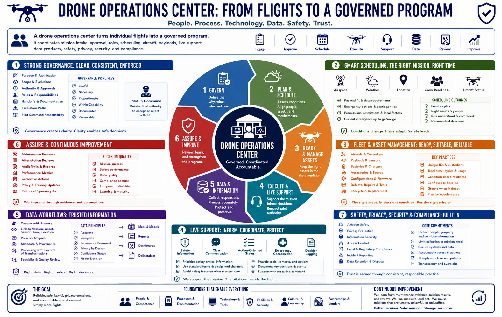

Course Summary and Key Takeaways
Connecting to LMS... Progress: in progress

Narration
A drone operations center turns individual flights into a governed program. It coordinates mission intake, approval, roles, scheduling, aircraft, payloads, live support, data products, safety, privacy, security, and compliance.
Strong governance defines purpose, scope, authority, exclusions, handoffs, escalation, and pilot command responsibility. Facilities and systems should support secure storage, battery safety, planning, communication, maintenance, data protection, and recovery.
Scheduling combines current airspace, weather, location, crew readiness, aircraft status, payload fit, emergency options, and data requirements. Fleet management tracks each asset, battery, configuration, defect, repair, and lifecycle decision.
Live support prioritizes safety information, clear communication, action-oriented status, emergency coordination, and decision logging without replacing the pilot. Data workflows preserve provenance, metadata, originals, privacy, confidence, and specialist review.
The goal is reliable, safe, lawful, privacy-conscious, and accountable operation, not simply more flights. Continuous improvement comes from maintenance evidence, after-action review, audit trails, and a culture willing to pause unsafe or unjustified missions.